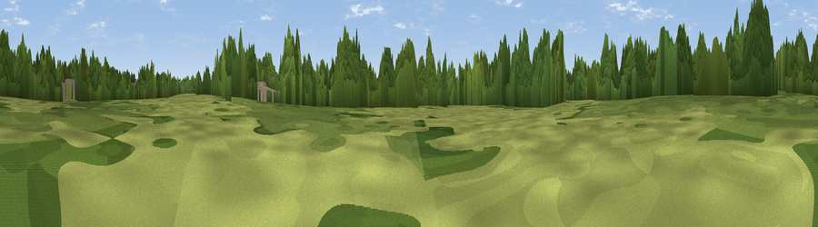

Little Hulton Greenheys
#39595 in England · top 89% of its area beats it · near Little HultonThe view, rendered

A 360° render of this exact spot computed from the terrain model, tree cover and land cover — summer colours, afternoon light, calibrated against photographs of famous viewpoints. Real trees, hedges and buildings will differ in detail.
The panorama
Grey silhouette: terrain skyline in each direction (720 bearings, Earth curvature and refraction included). Dashed green: skyline with trees (+15 m) and buildings (+8 m) as obstacles. Blue strip: how far the ground is visible on each bearing.
Where the view opens
Wedge length = distance to the farthest visible ground on that bearing (vegetation-aware). Rings at 10, 25 and 50 km.
What fills the view
40% grassland · 37% woodland · 17% built-up · 6% cropland
Angular shares of the visible panorama (visual magnitude), not map area. Landscape diversity 0.53 (0–1 Shannon).
Key numbers
More beautiful places nearby
The staircase of upgrades: each row has a higher view potential than everything closer. Driving times are estimates from straight-line distance, calibrated against real road routing — check an actual route before setting out.
| Place | Direction | Drive | Score |
|---|---|---|---|
| Top-o-Cow | NW · 2 km | ~6 min | 57.6 |
| Viewpoint near Horwich | NW · 7 km | ~14 min | 61.0 |
| Viewpoint near Bradshaw | NNE · 9 km | ~17 min | 63.4 |
| White Brow | NW · 9 km | ~18 min | 82.9 |
| Warton Crag | NNW · 71 km | ~95 min | 83.2 |
| Viewpoint near Grange-over-Sands | NNW · 80 km | ~104 min | 83.4 |
| Viewpoint near Cartmel | NNW · 82 km | ~106 min | 87.0 |
| Viewpoint near Cartmel | NNW · 83 km | ~107 min | 87.2 |
53.53968, -2.43676 · source: osm peak · position refined by local search. Computed location — check access rights before visiting.